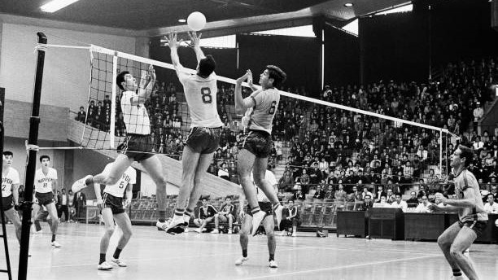

Volleyball was invented in 1895 by William G. Morgan, a physical education instructor in Holyoke, Massachusetts, USA.
Morgan created the game as a less physically demanding alternative to basketball, which was popular at the time.
Originally called "mintonette," the game was played with a net and a ball similar to a basketball. The objective
was to hit the ball back and forth over the net without allowing it to touch the ground. The first official game
of volleyball was played on July 7, 1896 at Springfield College in Massachusetts.
Over time, the game of volleyball evolved and rules were established. In 1916, the first international volleyball
game was played between the United States and Canada. In 1928, the International Volleyball Federation (FIVB) was founded, and the first World Championships were held in 1949 for men and
1952 for women.
Volleyball became an Olympic sport for the first time in 1964 at the Tokyo Games. Beach volleyball, a variation of
the sport played on sand, became an Olympic sport in 1996 at the Atlanta Games.
Today, volleyball is played all over the world at all levels of competition, from recreational to professional.
The FIVB governs the sport internationally, and there are also national and regional organizations that oversee
volleyball in different parts of the world.
In the early years of volleyball, there were no official positions or rotations. Players could move anywhere
on the court and take on any role they wanted.
The name "volleyball" was adopted in 1896, and the first official ball for the sport was designed in 1900.
The first official rules of volleyball were established in 1916 by the United States Volleyball Association(USVBA), which later became USA Volleyball.
The first two-person beach volleyball tournament was held in 1948 in California, and the sport quickly grew
in popularity in the following decades.
Volleyball has been played at every Summer Olympics since 1964, with the exception of the 1968 games in Mexico
City.
The United States men's national volleyball team won gold at the 1984 Los Angeles Olympics, which helped to
popularize the sport in the United States.
The FIVB organizes several major international volleyball events, including the World Championships, the
Volleyball Nations League, and the Olympic Games.
In recent years, there have been efforts to make volleyball more inclusive and accessible to people with
disabilities. Sitting volleyball, which is played by athletes with lower-limb impairments, was added to the
Paralympic Games in 1980.

Volleyball was first introduced to Europe in 1900, and it quickly spread throughout the continent. The first
European Championships were held in 1948.
The first World Championships for women were held in 1952, and the Soviet Union won the gold medal.
In the 1960s and 1970s, Japanese teams dominated international volleyball, winning numerous World Championships
and Olympic medals.
Brazil has been one of the most successful countries in volleyball in recent decades, winning multiple Olympic
gold medals and World Championships for both men and women.
Volleyball has undergone several rule changes over the years to make the game faster and more exciting. For
example, the number of players on each team was reduced from six to five in 1949, and the rally scoring system was
introduced in 1998.
The FIVB has established several initiatives to promote the development of volleyball around the world,
including the Volleyball Cooperation Program, which provides equipment and coaching to developing countries, and
the Volleyball Your Way program, which aims to introduce the sport to new participants.
Today, volleyball is one of the most popular team sports in the world, with an estimated 900 million people
playing the game on a regular basis.